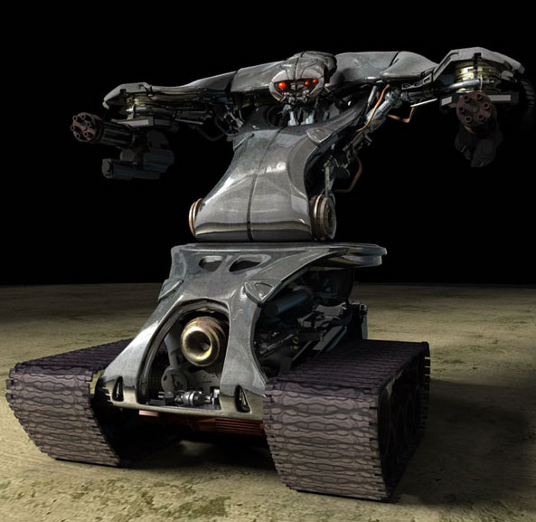

The HK airstrike unit offers superior advantages in the air and is used
to support ground units providing reconnoissance
and and air fire support. Armed with two machine guns and two missile
pods.
The HK has basic networked programming and is also available for upgrades to the cpu.
This aircraft is assigned to a variety of tasks. and is able to transport other units. The majority
seen
in combat appear to fill the light attack role, similar to that of the Boeing Apache helicopter.
The T800 Terminator
The T800 Series Terminator contains a Neural Net Processor CPU,
contained within the endoskull and protected by inertial shock dampers. The metal
endoskeleton of the T-800 is a triple-armored hyper-alloy
combat chassis, capable of withstanding heavy damage
The CPU, Systems, is one of the most powerful microprocessors ever built. As part
of its vast internal databases, the T-800 contains detailed files on human anatomy
and physiology so as to make it a more efficient killer, making each unit a
combat veteran.

The T-1 Battlefield Robot
The T-1 BattleField Robot, is a fully Autonomous Ground Offensive System,The series 1 is
designed to clear battlefields of enemy troops with it’s powerful
weaponry. Mounted upon either side of the Series 1 are "arms" that are fitted with a
General Electric 50-caliber minigun capable of firing 3000 depleted uranium rounds per
minute. With various optical sensors and a laser
beam targeting system mounted inside. it is capable of identifying and eliminating
multiple targets, using auditory, heat and motion sensors.